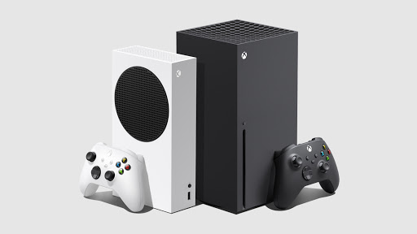
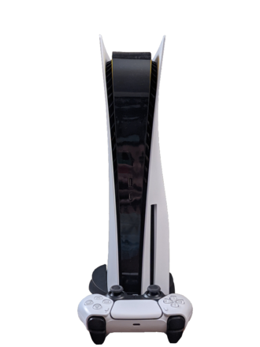

XBox Series X/S
The Xbox Series X and the Xbox Series S (collectively, the Xbox Series X/S) are home video game consoles developed by Microsoft. They were both released on November 10, 2020 as the fourth generation of the Xbox console family, succeeding the Xbox One family. Along with Sony's PlayStation 5, also released in November 2020, the Xbox Series X and Series S are part of the ninth generation of video game consoles.
Rumors regarding the consoles first emerged in early 2019, with the line as a whole codenamed "Scarlett", and consisting of high-end and lower-end models codenamed "Anaconda" and "Lockhart" respectively. Internally, Microsoft had been satisfied with the two-console approach for the Xbox One, and planned a similar approach for the fourth generation Xbox, with the target for the high-end model to at least double the performance of the Xbox One X. The high-end model was first teased during E3 2019 under the title "Project Scarlett", while its name and design as Xbox Series X was unveiled during The Game Awards later in December. In September 2020, Microsoft unveiled the lower-end model as the Xbox Series S.
The Xbox Series X has higher end hardware, and supports higher display resolutions (up to 8K resolution) along with higher frame rates and real-time ray tracing; it also has a high-speed solid-state drive to reduce loading times. The less expensive Xbox Series S uses the same CPU, but has a less powerful GPU, has less memory and internal storage, and lacks an optical drive. Both consoles are backwards compatible with many previous generation Xbox games, controllers, and accessories. As part of a program Microsoft calls "Smart Delivery", many previous generation games feature upgraded graphics on the Series X/S at no additional charge. The consoles are also compatible with the gaming subscription service Xbox Game Pass, as well as the cloud game-streaming platform Xbox Game Pass cloud gaming.
PlayStation 5
The PlayStation 5 (PS5) is a home video game console developed by Sony Interactive Entertainment. Announced in 2019 as the successor to the PlayStation 4, the PS5 was released on November 12, 2020, in Australia, Japan, New Zealand, North America, and South Korea, with worldwide release following a week later. The PS5, along with Microsoft's Xbox Series X and Series S consoles, released the same month, are part of the ninth generation of video game consoles.
The platform was launched in two variants: a base model with an Ultra HD Blu-ray–compatible optical disc drive, and a Digital Edition lacking this drive, serving as a lower-cost model for those who prefer to buy games through digital download.
The PlayStation 5's main hardware features include a solid-state drive customized for high-speed data streaming to enable significant improvements in storage performance, an AMD GPU capable of 4K resolution display at up to 120 frames per second, hardware-accelerated ray tracing for realistic lighting and reflections and the Tempest Engine allowing for hardware-accelerated 3D audio effects. Other features include the DualSense controller with haptic feedback and backward compatibility with most PlayStation 4 and PlayStation VR games.